The master directory for the Invariant Computing umbrella, foundational research, implementation programmes and creative studios.
01 / DIRECTORY
Seventeen sites.
One index.
Every programme remains independently accessible. This page makes the architecture legible without flattening research, ventures and studios into the same status.
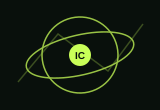
Invariant Computing
Observer-aware computation, invariants, provenance and recoverability.
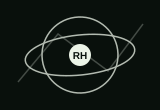
Research Hub
Entry point to foundational research programmes.
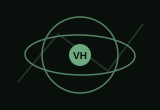
Ventures Hub
Entry point to downstream implementation programmes.
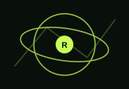
RARI
Agency, identity, perturbation and operational boundaries.
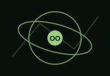
OCIL / OCIR
Observer-conditioned language, representation and reconstruction.
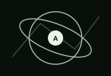
AFC
Relational computation, preserved structure and recoverability.
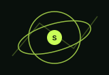
SACRA
Symbolic authority, conversion, ritual and agency.
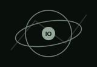
Invariant OS
Language tooling, IR, bounded runtime and research-OS components.
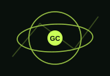
Geometrodynamic Computing
Geometry, reference frames, state space and persistent-world representation.
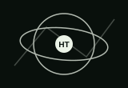
Humanization Tech
Biomedical representation, bounded AI and research infrastructure.
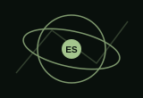
ElevateOS Studio
Games, simulation, Unreal prototyping and persistent worlds.
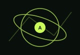
ATMER
Model routing, reasoning budgets and workflow execution.
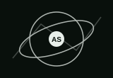
Aurelis Space
Onboard compute, biosystems and space technology concepts.
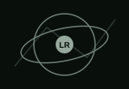
Lutetia Retreats
Hospitality and human-centred systems concept programme.
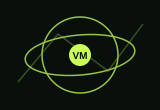
Vectaris Mobility
Mobility systems, human factors and vehicle technology.
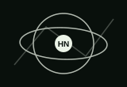
Hoshi no Umi Studio
Narrative and creative systems studio. Studio Head: Ayşe Gürnaz.
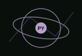
Purpura Yakamoz
Narrative and creative systems studio. Studio Head: Ayşe Gürnaz.